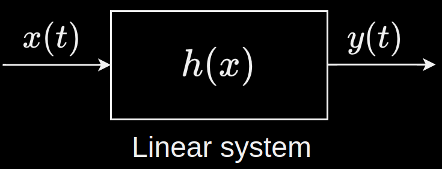

Consider an LTI system represented by the function $h$. When fed with an input signal $x(t)$, it outputs a signal $y(t)$.

$y(t) = h(x(t))$
Since $h$ is an LTI system, the only operation it can perform are the ones mentioned here. Hence $h$ can be considered to be a linear operator representing these linear operations.
$h$ provides a linear mapping between the vector $x(t)$ and the vector $y(t)$